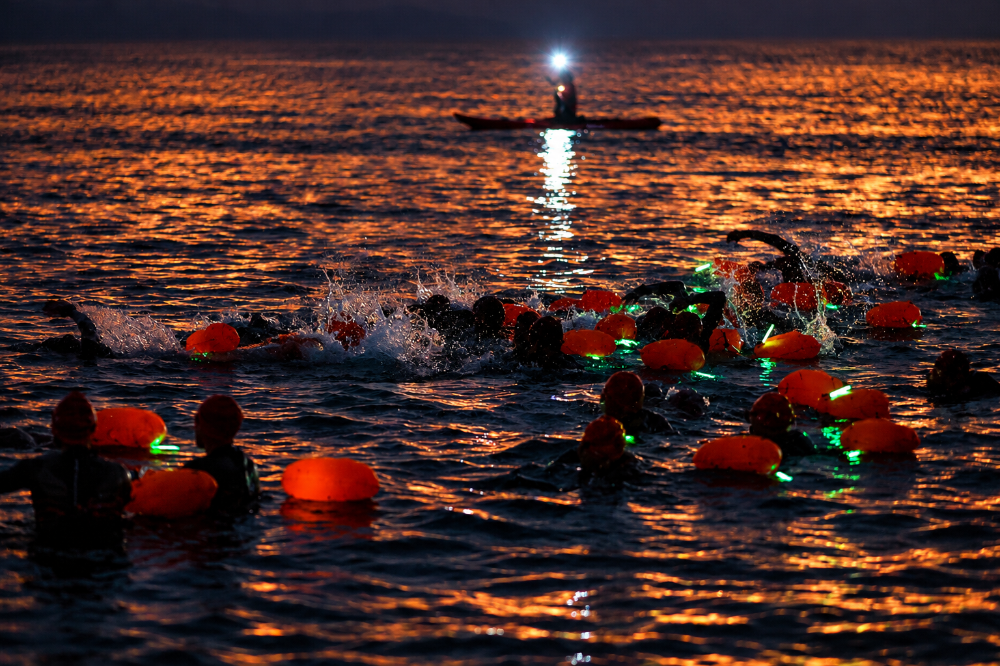
Image Media follows the 10 October event through an illuminated swim, a coastal run and the people gathered around the extreme triathlon.
Read more →
AVYNT Hybrid Arena hosted the 10 October competition, with Figueirenses e uma Scaled topping the podium announced by the organiser.
Read more →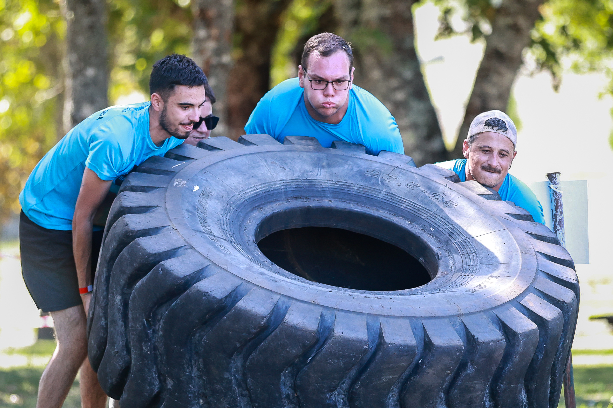
A five-kilometre obstacle challenge brought strength, coordination and shared effort to the Portuguese town on 10 October.
Read more →
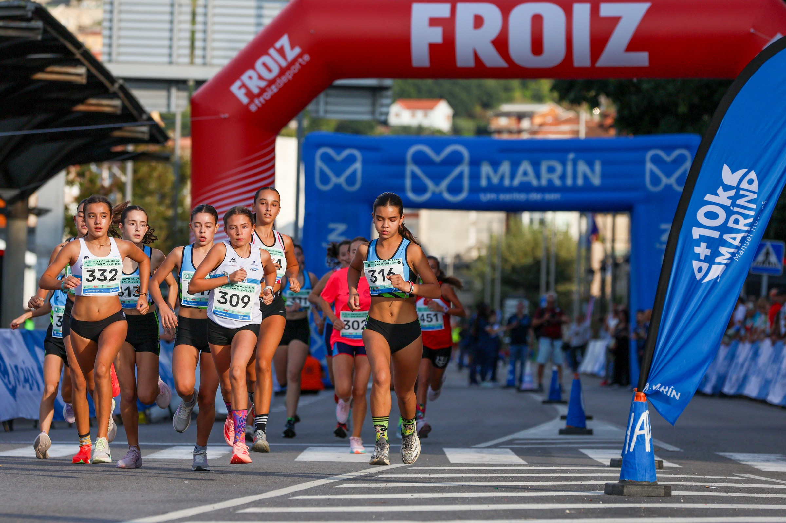
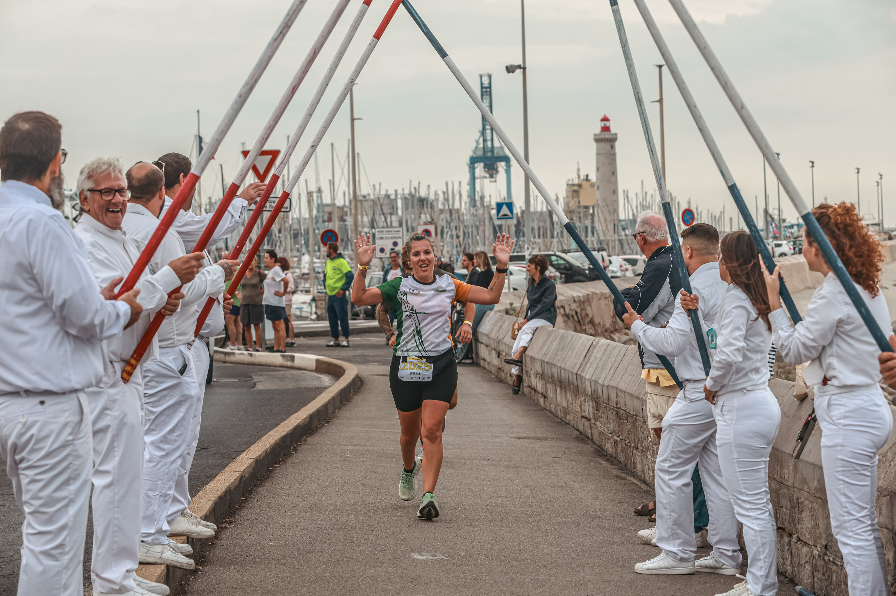
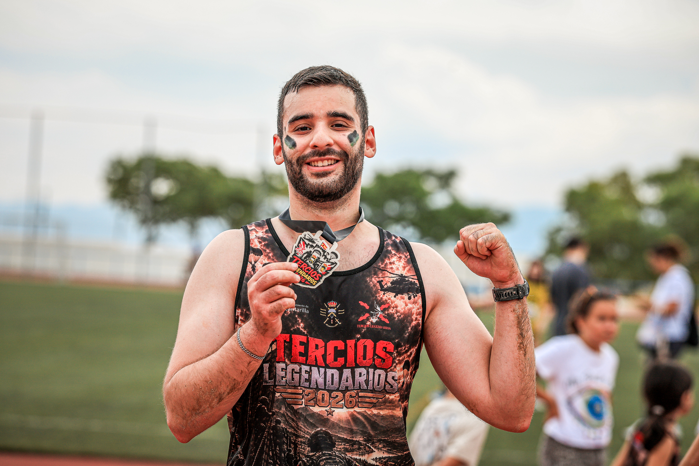
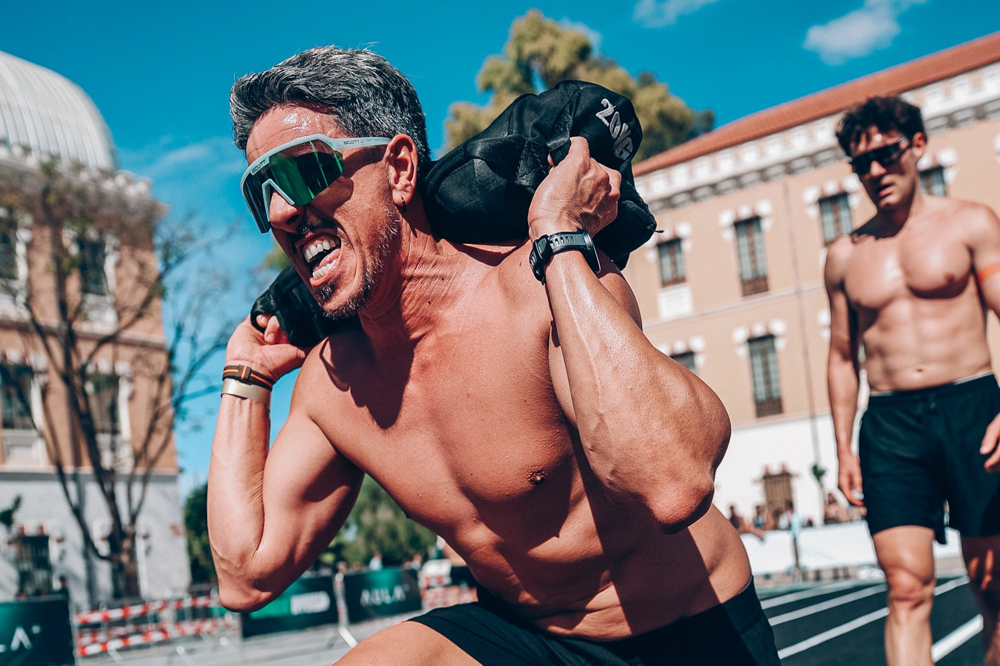
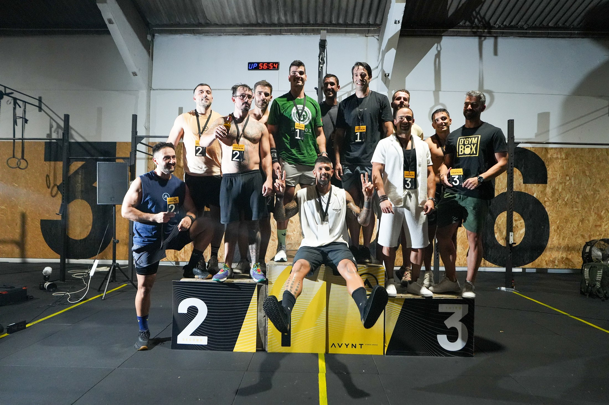
The first AVYNT Ergathlon brought athletes to Vila Nova de Gaia on 15 August for a night-time indoor endurance competition.
Read more →✎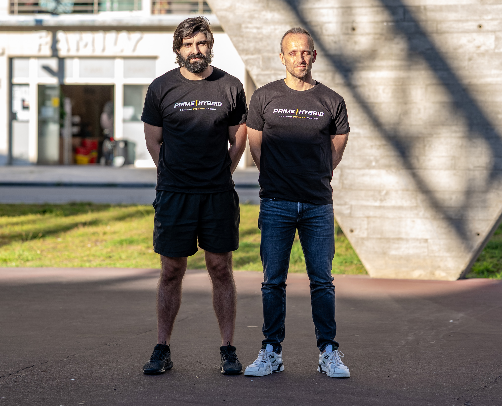
Organisers say more than 600 athletes have registered for Portugal’s first fully urban hybrid fitness race, with the 26 September event now targeting 800 entries.
Read more →✎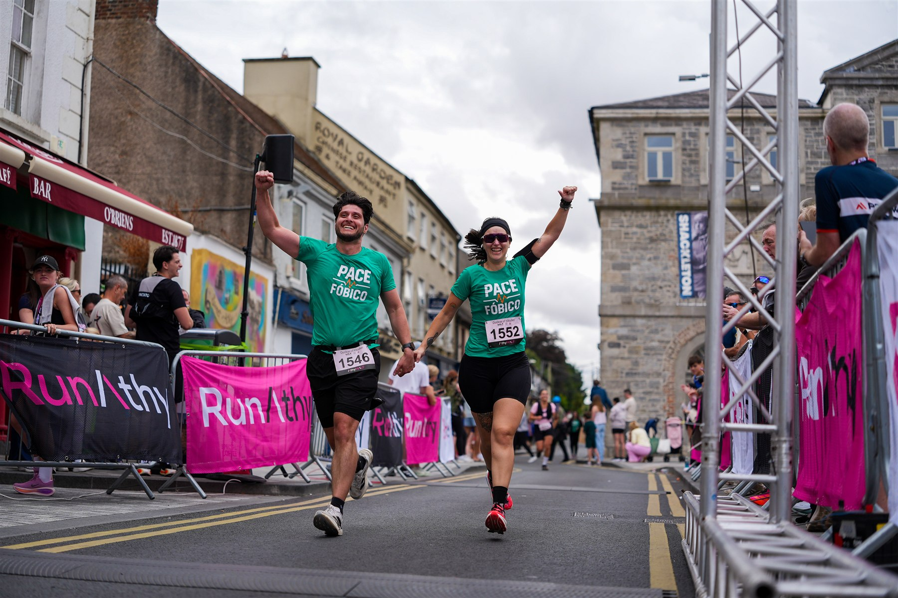
Terry Shanley and Monica Holmes won the headline races as 955 classified finishers completed the half marathon, 10K and 5K in Athy, County Kildare.
Read more →✎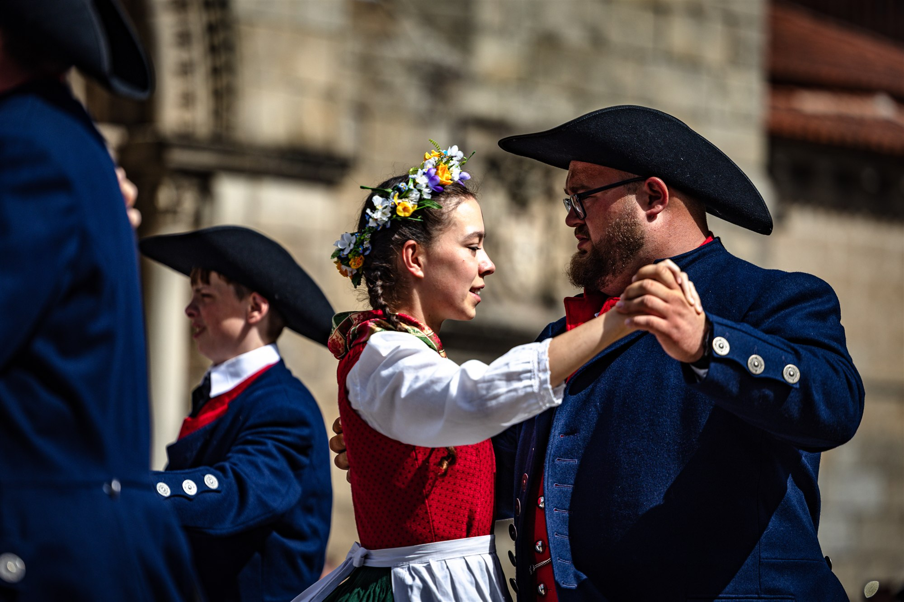
The 13th edition ran from 3 to 10 August 2026, bringing groups representing seven nationalities to venues across Guimarães, with Image Media correspondent Paulo Nomade documenting the festival.
Read more →✎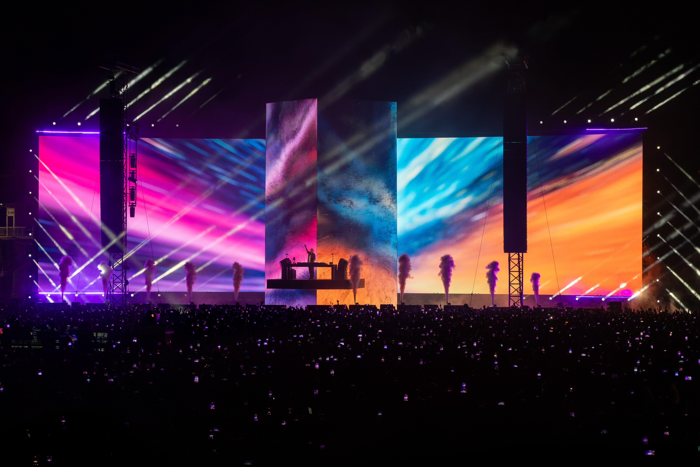
David Guetta played Parque Papa Francisco in Loures on 2 August 2026 with "The Monolith," a large-scale production built around a central LED structure.
Read more →✎